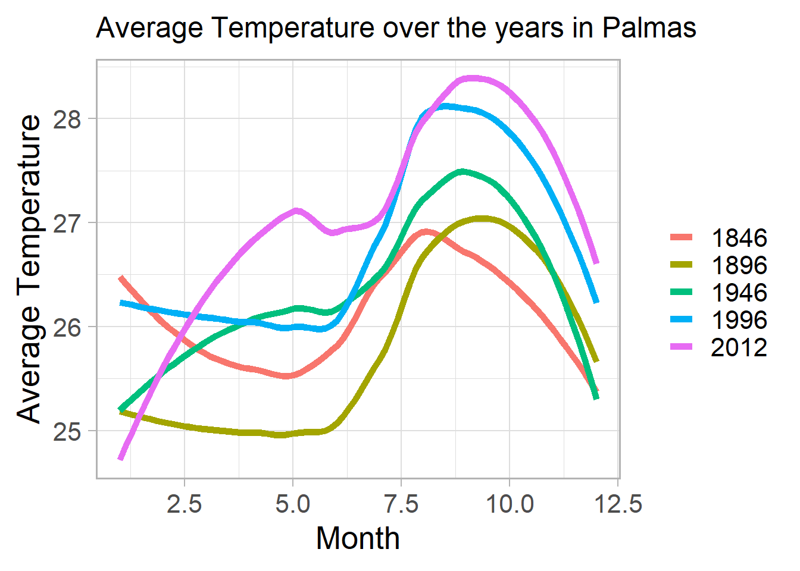
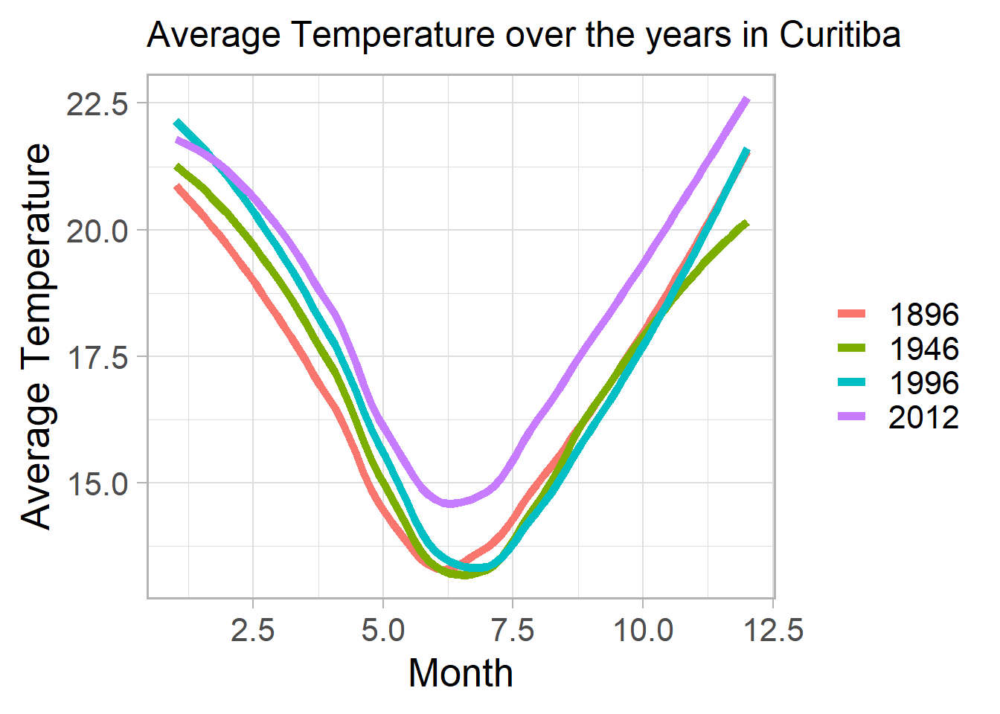
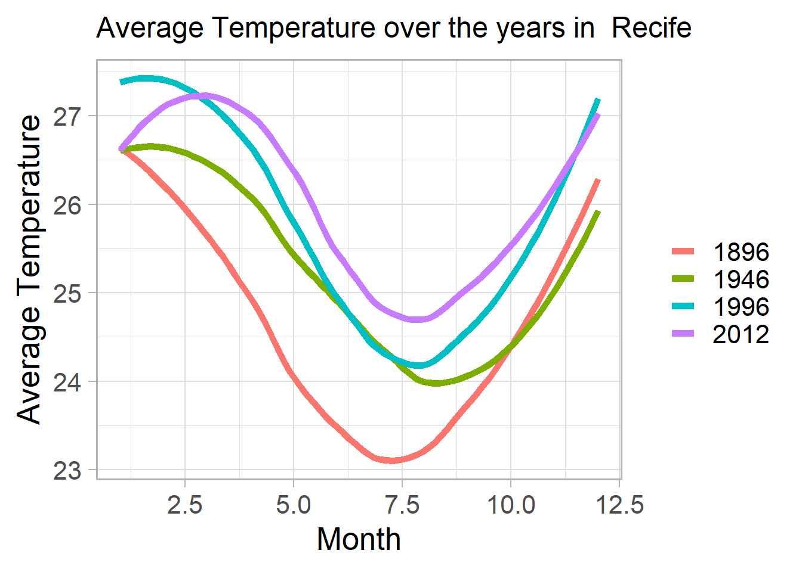

##
## Attaching package: 'dplyr'## The following objects are masked from 'package:stats':
##
## filter, lag## The following objects are masked from 'package:base':
##
## intersect, setdiff, setequal, union##
## Attaching package: 'scales'## The following object is masked from 'package:readr':
##
## col_factor##
## Attaching package: 'data.table'## The following objects are masked from 'package:dplyr':
##
## between, first, lastsystem.time(df_teste1 <- read.csv2("TemperaturasGlobais.csv"))## user system elapsed
## 48.83 2.25 52.10system.time(df_teste2 <- read.table("TemperaturasGlobais.csv"))## user system elapsed
## 19.91 1.60 21.84system.time(df <- fread("TemperaturasGlobais.csv"))## user system elapsed
## 10.62 0.65 8.73cidadesBrasil <- subset(df, Country == 'Brazil')
cidadesBrasil <- na.omit(cidadesBrasil)
head(cidadesBrasil)## dt AverageTemperature AverageTemperatureUncertainty City
## 1: 1832-01-01 25.953 1.570 Alagoinhas
## 2: 1832-02-01 25.933 2.372 Alagoinhas
## 3: 1832-03-01 25.968 1.585 Alagoinhas
## 4: 1832-04-01 25.100 2.175 Alagoinhas
## 5: 1832-05-01 24.213 1.809 Alagoinhas
## 6: 1832-06-01 23.844 1.695 Alagoinhas
## Country Latitude Longitude
## 1: Brazil 12.05S 37.81W
## 2: Brazil 12.05S 37.81W
## 3: Brazil 12.05S 37.81W
## 4: Brazil 12.05S 37.81W
## 5: Brazil 12.05S 37.81W
## 6: Brazil 12.05S 37.81Wnrow(df)## [1] 8599212nrow(cidadesBrasil)## [1] 451645dim(cidadesBrasil)## [1] 451645 7cidadesBrasil$dt <- as.POSIXct(cidadesBrasil$dt,format='%Y-%m-%d')
cidadesBrasil$Month <- month(cidadesBrasil$dt)
cidadesBrasil$Year <- year(cidadesBrasil$dt)
View(cidadesBrasil)plm <- subset(cidadesBrasil, City == 'Palmas')
plm <- subset(plm, Year %in% c(1796,1846,1896,1946,1996,2012))crt <- subset(cidadesBrasil, City == 'Curitiba')
crt <- subset(crt, Year %in% c(1796,1846,1896,1946,1996,2012))recf <- subset(cidadesBrasil, City=='Recife')
recf <- subset(recf,Year %in% c(1796,1846,1896,1946,1996,2012))p_plm <- ggplot(plm, aes(x = (Month), y = AverageTemperature, color = as.factor(Year))) +
geom_smooth(se = FALSE,fill = NA, size = 2) +
theme_light(base_size = 20) +
xlab("Month")+
ylab("Average Temperature") +
scale_color_discrete("") +
ggtitle("Average Temperature over the years in Palmas") +
theme(plot.title = element_text(size = 18))
p_crt <- ggplot(crt, aes(x = (Month), y = AverageTemperature, color = as.factor(Year))) +
geom_smooth(se = FALSE,fill = NA, size = 2) +
theme_light(base_size = 20) +
xlab("Month")+
ylab("Average Temperature") +
scale_color_discrete("") +
ggtitle("Average Temperature over the years in Curitiba") +
theme(plot.title = element_text(size = 18))
p_recf <- ggplot(recf, aes(x = (Month), y = AverageTemperature, color = as.factor(Year))) +
geom_smooth(se = FALSE,fill = NA, size = 2) +
theme_light(base_size = 20) +
xlab("Month")+
ylab("Average Temperature") +
scale_color_discrete("") +
ggtitle("Average Temperature over the years in Recife") +
theme(plot.title = element_text(size = 18))p_plm## `geom_smooth()` using method = 'loess' and formula 'y ~ x'
p_crt## `geom_smooth()` using method = 'loess' and formula 'y ~ x'
p_recf## `geom_smooth()` using method = 'loess' and formula 'y ~ x'